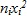
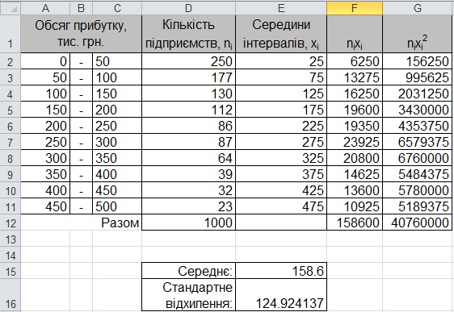

Вправа 7.4. Обчислення статистичних показників
У файлі Вправа_7_4.xlsx показано ряд розподілу підприємств міста N за прибутком. Обчисліть середній прибуток та стандартне відхилення прибутку цих підприємств. Зробіть висновки.
- Відкрийте файл Bпpaвa_7_4.xlsx. У ньому на аркуші Аркуш1 наведено інтервальний ряд розподілу: у стовпці А вказано нижні межі інтервалів, у стовпці С – верхні, у стовпці D зазначено частоти.
- Щоб обчислити статистичні показники, інтервальний ряд розподілу необхідно перетворити на дискретний. Для цього слід насамперед обчислити середини інтервалів. Уведіть у клітинку Е2 формулу =(А2+С2)/2, скопіюйте її в діапазон ЕЗ:Е11, і середини інтервалів буде відображено у стовпці Е.
- Обчисліть величини та  де – частоти, а – середини інтервалів. Для цього введіть у клітинки F2 та G2 формули =D2*E2 та =D2*E2^2 і скопіюйте їх у діапазон F3:G11.
- Обчисліть суми величин , та у клітинках D12, F12 і G12, скориставшись функцією SUM.
- Визначте у клітинках Е15:Е16 середнє значення та стандартне відхилення за формулами (1)-(3). Ви маєте отримати такі значення, як на рис. 7.11.

Рис. 7.11. Обчислення статистичних показників ряду розподілу - Виходячи з отриманих значень середнього та стандартного відхилення, зробіть висновки щодо розподілу підприємств за величиною прибутку.